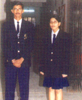
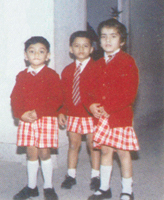
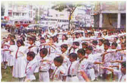
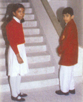

Home
Vision
History
Location
Organisation
Curriculum
School Uniform
Teaching Staff
Facilities
Activities
Rules
Register online
Photogallery
Contact Us
Site Map
School Uniform

FOR BOYS:
White T-shirts’’ White shorts or trousers
Plain black shoes (Bata)
White socks (without design)
School tie and belt
NB: In case of XI and XII boys the T-shirt should be blue with navy blue trousers. Other things remain the same.

FOR GIRLS:
White skirts, White shirts.
Plain black shoes with White socks (without design)
School tie and belt.
NB: In case of XI and XII there should be blue skirt and navy blue shirt. Other things remain the same.
P.T. UNIFORM

FOR BOYS:
White shirt
White shorts with blue stripes (for all classes)
White shocks P.T. white cades
FOR GIRLS:
White divided skirts with navy blue stripes
White shirts with navy blue stripes (for all classes)
White socks
P.T. white cades.

WINTER UNIFORM:
Nursery to Class II – School sweater for boys and girls.
Class III and above: School Blazer with monogram for both boys and girls
Powered by Google.com